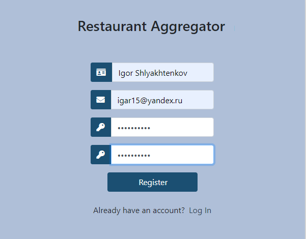
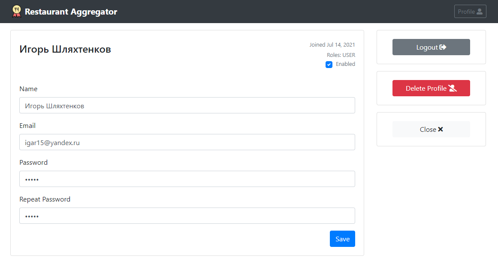
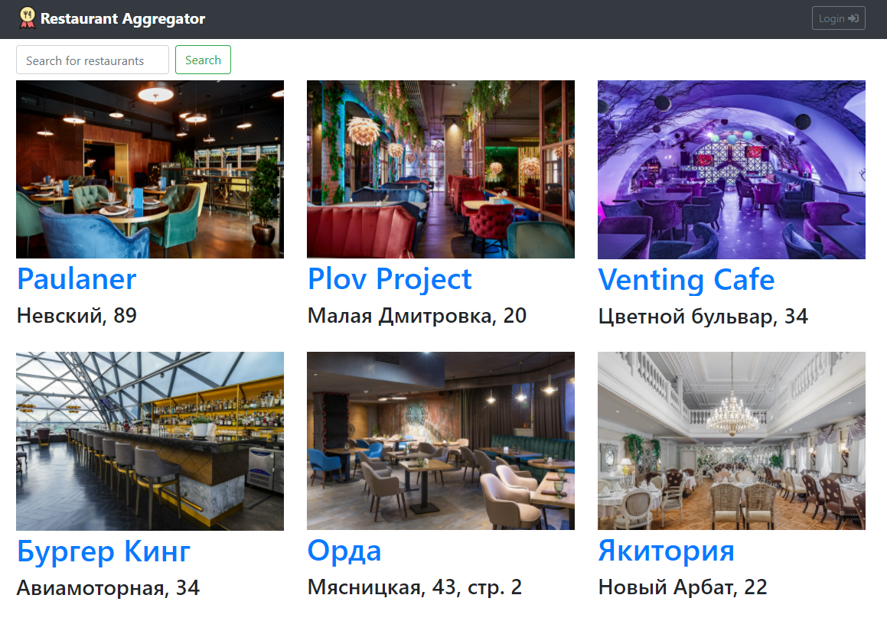
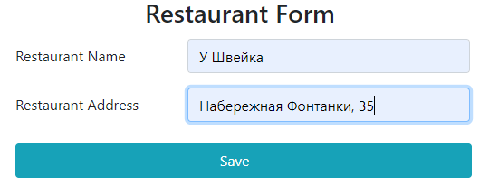

Maven
Spring MVC
Spring Data JPA
Hibernate
Spring Security
REST (Jackson)
OpenAPI 2
Ehcache
JUnit 5
Angular 2
Bootstrap 4
Данное приложение позволяет пользователям получать информацию о ресторанах и предлагающихся в них ланч-меню дня, а также один раз в сутки голосовать за понравившийся ресторан.
В приложении используется два вида пользовательских ролей: пользователи и администраторы. Каждой роли присущи свои выполняемые задачи.
Пользователи могут зарегистрироваться в приложении, заполнив данные об учетной записи на странице регистрации.
Любому авторизованному пользователю приложения доступна возможность просмотреть свой профиль, изменить имя, адрес электронной почты, а также сменить текущий пароль.
Любому авторизованному пользователю приложения доступна возможность просмотреть свой профиль, изменить имя, адрес электронной почты, а также сменить текущий пароль.
При желании пользователь имеет право удалить свою учетную запись.
Анонимные пользователи могут просматривать информацию о ресторанах и их ланч-меню дня. Поддерживается поиск ресторана по имени.

Авторизовавшимся пользователям доступна возможность проголосовать за понравившийся ресторан.
Отдать голос можно только за один ресторан и один раз в сутки. До 11:00 доступна возможность изменить выбор, проголосовав за другой ресторан.
Основной задачей администраторов является менеджмент данных ресторанов.
Администраторы могут создавать новые рестораны, а также редактировать и удалять информацию об уже имеющихся.

Ежедневно администраторы добавляют для ресторанов информацию об их предлагаемом сегодня ланч-меню.
После создания ланч-меню дня для ресторана, у пользователей появляется возможность голосовать за него.